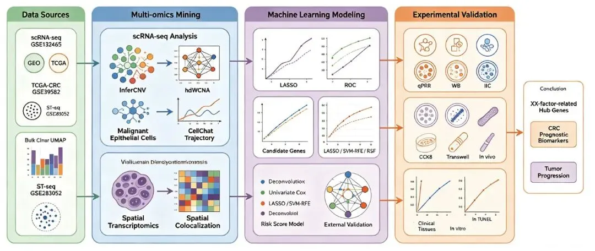

带着你的生信idea，也许我们可以给你答案
原文：https://mp.weixin.qq.com/s?__biz=MzAwMzIzOTk5OQ==&mid=2247539480&idx=1&sn=9f1d8a76c0a5ddad4983c3fcf7620622&chksm=9b3c2248ac4bab5e30c2b38a268a6368663b32f530dbb46a15b66d4d3bca57ab417d61afc825#rd 合集：生信分析服务/个性化分析
一、你的生信我搞定
生信基地，永远都不是论文工厂，但你最好带着生信idea和科研计划来，不要上来就是一句我要一篇几分的SCI论文。我们更希望看见的是明确的分析需求与科研想法，例如：
我是研究XXX疾病的，我现在希望阐明XXX问题。我现在比较关注XXX现象，希望找到XXX机制中A、B、C靶点在XXX细胞中与XXX进程之间的关联性。我阅读了文章A和B，其中的GSEXXX数据中的单细胞/空转/XXX组学可以分析证明我的猜想。请帮我完成亚群分析、细胞通讯、XXXX、机器学习、生存分析等生信操作。甚至科研带着你详细的开题报告/科研想法。例如下文的研究方案。

如果是这样，生信基地将会很有兴趣替你完成生信分析过程，让你能解放精力聚焦于生物学问题，生信基地也很乐意陪伴你走完这个科研项目。** **如果需要 单细胞数据分析教学、生信热点全文复现、自测数据个性化分析辅导、实验科研服务和常态化实验学习，欢迎联系[Biomamba_zhushou]。
二、带着需求有效沟通
生信分析部分的内容你可以做一个初步规划，当然这个规划也可以在你阐明研究目的之后，我们来帮你完成：
1、数据来源：
1.1 结直肠癌单细胞数据集：
从GEO数据库（http://www.ncbi.nlm.nih.gov/geo/）中下载CRC的scRNA-seq数据：GSE132465（GPL20301）包含23例肿瘤组织和10例匹配的癌旁组织样本，作为单细胞数据集。测序方式：高通量测序；用途：差异基因筛选。
1.2 训练集：
结直肠癌TCGA-CRC队列：从TCGA(The Cancer Genome Atlas Program， https://www.cancer.gov/ccg/research/genome-sequencing/tcga)数据库下载 CRC 患者的转录组学数据 TCGA-CRC，包括383个CRC肿瘤组织样本和51个癌旁对照组织样本，同时下载预后信息、体细胞突变数据、肿瘤突变负荷(TumorMutational Burden，TMB)和临床数据(包括年龄，性别，肿瘤淋巴结转移(TNM)分期，肿瘤分级，总生存(OS)时间和生存状态等)。测序方式:高通量测序;用途:差异基因鉴定、预后基因鉴定等。
1.3 CRC验证集：
从GEO数据库（http://www.ncbi.nlm.nih.gov/geo/）中下载CRC的芯片数据：GSE39582(GPL570)作为验证集，包括566例癌组织和19例癌旁组织样本，以及患者的临床信息（包括年龄、性别、生存时间、生存状态等）。测序方式：微阵列芯片；用途：风险分型的校验和关键基因表达量的验证。
1.4 CRC备用集：
从GEO数据库（http://www.ncbi.nlm.nih.gov/geo/）中下载CRC的芯片学数据：GSE29621(GPL570)作为备用集，包括65例癌组织，以及患者的临床信息（包括性别、年龄、肿瘤分期等）。测序方式：微阵列芯片；用途：防止数据量不够。
1.5 CRC空间转录组数据：
从GEO数据库（http://www.ncbi.nlm.nih.gov/geo/）中下载CRC的ST-seq数据：GSE283052（GPL24676），12例结直肠癌肿瘤组织样本。目的：分析关键细胞空间异质性。
1.6 XX因素数据集：
研究目标：
生物信息学方法鉴定CRC与XX因素相关的生物标志物；筛选CRC在XX因素中发挥关键作用的基因，挖掘XX因素在其中发挥的调控作用；通过机器学习筛选关键基因并构建预后模型，分析潜在的分子亚型，探究CRC的潜在发病机制。
拟解决的科学问题：
通过生物信息学方法探究XX因素相关的生物标志物作为CRC诊断标志物的可行性。生物信息学分析这些生物标志物参与的生物学途径、调控机制等是否有助于CRC的诊断和治疗新策略的发掘。
创新性：
本方案通过GEO和TCGA等多个数据库，联合单细胞测序数据，首次挖掘XX因素在CRC发生发展过程中的分子机制，聚焦CRC中XX因素相关的潜在生物标志物，并利用机器学习构建预测模型，为CRC治疗提供新视角。
2、方法
单细胞数据预处理：单细胞降维聚类；细胞注释；初步分析关键细胞；肿瘤上皮细胞再聚类；InferCNV筛选恶性上皮细胞；筛选关键细胞；关键细胞hdWGCNA分析；关键细胞亚群通讯网络；
空间转录组分析：空间转录组数据预处理；空转数据反卷积；关键细胞空间共定位分析；
初步识别候选基因：筛选候选基因；候选基因Bulk数据验证；候选基因GO/KEGG富集分析；识别关键基因筛选预后风险基因；机器学习筛选关键基因；
构建预后风险模型：风险模型构建与模型的验证；高低风险组划分；高低风险组间生存分析；
关键基因延伸分析：表达量验证与功能分析；HPA数据库验证；CPTAC数据库验证；
具体流程如下：（示意图仅作为展示，不代表实验最终结果）
2.1 单细胞数据处理及初步聚类
使用“Seurat”软件包分析原始单细胞RNA数据。为了提高数据质量，使用“doublet finder”R软件包来根据遗传数据消除双重细胞，然后应用“PercentageFeatureSet”函数来过滤低质量细胞。计算基因数、细胞数的百分比，过滤掉少于200个基因的细胞和少于3个细胞覆盖的基因。
根据参考文献中的Marker基因结合常用mark gene，采用UMAP降维聚类，对细胞亚群进行注释并进行可视化，以识别不同的细胞类型。
2.2 筛选恶性细胞
为明确上皮细胞中是否存在导致预后产生差异的细胞亚群，进一步地针对来源于肿瘤中的上皮细胞进行再次聚类。（此处暂定为上皮细胞）
InferCNV（https://github.com/broCRCinstitute/ infer CNV/wiki）是TrinityCTAT工具包的一个组成部分，可以用于scRNA-seq数据中鉴定大规模染色体拷贝数变异（copy number variation，CNV），用一组“正常”细胞（本方案中选择以非恶性免疫细胞群作为稳定的二倍体参考[ ]），纳入肿瘤组中所有的肿瘤上皮细胞亚群，分析肿瘤基因组上各个位置的基因表达量强度变化，通过热图的形式展示每条染色体上的基因的相对表达量，那么相较于正常细胞，肿瘤基因组会表现出过表达或者低表达。R包scCancer中通过对infercnv进行整合，来区分出恶性和非恶性细胞。scCancer基于infercnv的结果，将染色体上最终 CNV 值平方的平均定义为恶性肿瘤的评分。通过将恶性肿瘤评分的分布与参考细胞进行比较并检测其双峰性，为细胞分配恶性肿瘤标签。具有高CNV的上皮细胞被定义为恶性上皮细胞亚群，并将该恶性上皮细胞亚群定义为关键细胞。
2.3 关键细胞的细胞间通讯分析
细胞间通讯是指一个细胞发出的信号通过介质传递到另一个细胞并引发相应的生理反应，这一过程在调节细胞功能和维持组织稳态中具有重要作用。为了系统地探索关键细胞亚型与微环境的相互作用对疾病的影响，利用“CellChat”软件包对细胞通讯进行分析和可视化，以深入了解关键细胞群之间的相互作用。通过细胞通讯分析，揭示不同细胞群体之间的信号传递网络，识别关键的受体-配体对及其相应的信号通路。
2.4 关键细胞空间异质性分析
使用了Seurat、Scanpy 和SingleCellExperiment来加载Space Ranger的输出，并处理空间转录组（ST）数据。通过确定每个组织覆盖的点（spot）的平均读数、独特分子标识符（UMI）数量和基因数量来评估ST数据的质量，并将其与未被组织覆盖的点进行比较。对于每个单独的样本，我们过滤掉了检测到的UMI计数低于500或高于45000的点。此外，那些线粒体基因占比超过0.5的点也不被纳入分析。SCTransform是一种基于泊松分布的标准化方法，能够有效处理零膨胀和高方差数据，适用于单细胞和空间转录组数据，使用SCTransform对剩余点的UMI计数进行了标准化。
10x Genomics Visium平台的每个空间点通常覆盖多个细胞，因此其检测到的基因表达谱反映局部多细胞混合信号，而非单个细胞的独立转录特征。为解析不同细胞类型在空间点中的组成及丰度，本研究将单细胞转录组数据作为参考图谱，与空间转录组数据进行整合分析。
首先，根据单细胞聚类和细胞注释结果，筛选各细胞类型具有较高特异性的标志基因，并构建细胞类型参考表达矩阵。采用Cell2location对空间转录组数据进行反卷积，估计各空间点中不同细胞类型的相对丰度。分析过程中保留各细胞类型的连续丰度信息，避免仅依据优势细胞类型对空间点进行单一分类，从而更准确地反映肿瘤组织中不同细胞群体的共存与空间异质性。必要时采用SPOTlight进行独立反卷积，并通过不同方法所得细胞丰度之间的相关性评价结果的稳健性。
在获得各细胞类型的空间丰度后，重点分析关键细胞亚群在不同组织区域中的分布特征，并识别其空间富集区域和热点。进一步采用MistyR构建多视图空间分析框架，分别评估同一空间点内部的细胞共存关系、相邻空间点之间的局部依赖关系以及更大空间尺度下的组织结构效应。通过随机森林模型计算不同细胞类型对关键细胞空间分布的预测重要性，从而识别与关键细胞具有显著空间依赖关系的细胞群体。
此外，结合Squidpy或SpottedPy开展空间邻域富集、热点间距离及共定位分析，计算关键细胞与免疫细胞、基质细胞或其他肿瘤相关细胞之间的空间邻近程度。通过置换检验评价观察到的空间共定位是否显著高于随机分布。最终，将空间共定位结果与单细胞层面的细胞通讯分析结果进行交叉验证，重点关注同时具有空间邻近性和配体-受体互作证据的细胞组合及信号通路，以增强潜在调控关系的生物学可信度。
2.5 初步分析关键细胞
为筛选与关键细胞最相关的模块基因，采取hdWGCNA分析，通过计算各模块基因与关键细胞的相关性系数，选择最相关的模块基因，并观察该模块基因在其他细胞中的表达情况。
2.6 获取候选基因
随后将关键细胞与其他细胞的差异基因、关键细胞模块基因分别与XX因素（由临床分析筛选获得），选择结果最佳的代谢重编程交集结果作为CRC中与XX因素相关的基因，随后进一步在Bulk数据集中针对交集基因进行表达量分析，选择在Bulk数据集中表现出显著差异的基因作为候选基因；并采用clusterProfiler包在KEGG/GO数据库的基础上，对交集基因进行GO和KEGG富集分析，预测基因功能；
2.7 单因素Cox筛选预后风险基因
首先，在训练数据中分别对各候选基因进行单因素Cox比例风险回归分析，评估其表达水平与患者总生存时间及生存状态之间的关系。根据风险比、95%置信区间及预设的显著性标准初步筛选预后相关基因，同时采用Schoenfeld残差检验比例风险假设。
2.8 构建模型并识别关键基因
在模型开发阶段，基于单因素Cox分析筛选后的候选基因在训练集，采用LASSO（最小绝对收缩和选择算子）、SVM-RFE（支持向量机递归特征消除）、RSF（随机生存森林）等机器学习算法（根据数据情况选择合适的算法组合）建立模型，在每次外层交叉验证中，仅使用训练集完成表达标准化、特征筛选和模型参数优化，并在验证集中评价模型性能。通过统计各候选基因在重复交叉验证中的入选频率（Selection frequency_i=Gene_i⁄B*100%，Genei表示入选基因，Selection frequency_i表示入选基因i的入选频率，B表示交叉验证次数），筛选稳定入选的特征基因。优先保留入选频率较高且被至少两类算法共同识别的基因，将该部分基因定义为关键基因。
最终针对关键基因，在验证集中进行表达量分析，验证关键基因在外部数据集中和训练集中是否有着类似的表达模式。
2.9 风险模型验证
基于多种机器学习共同筛选得到的关键预后基因，采用多因素Cox比例风险回归构建预后风险模型，并根据模型回归系数计算每例CRC患者的风险评分。以训练集风险评分的中位数为界，将患者分为高风险组和低风险组，采用Kaplan–Meier曲线及log-rank检验比较两组总生存差异。通过ROC曲线、C-index、校准曲线和Brier评分评价模型的区分度与校准度，并结合单因素和多因素Cox回归分析评估风险评分是否为独立预后因素。进一步整合风险评分与关键基因表达量，构建列线图，并采用决策曲线分析评价模型的临床应用价值。
2.10 关键基因表达量验证与功能分析
最终针对关键基因，在验证集中进行表达量分析，验证关键基因在外部数据集中和训练集中有着类似的表达模式，并进一步采用ROC曲线在训练集与验证集中验证关键基因。为了揭示特征基因与其潜在的感兴趣的生物过程之间的不同特征，在训练集上使用GSEA进行KEGG途径富集分析。
2.11 HPA与CPTAC数据库外部验证
为了验证关键基因的表达特征与XX因素相关风险预后模型鲁棒性，采用Clinical Proteomic Tumor Analysis Consortium（CPTAC）数据库和人类蛋白质图谱数据库（HPA）以获取关键基因代表性免疫组化图像以验证关键基因在肿瘤与正常组织中的表达差异。

参考文献
[1] Zhang Y, Wang X, Liu H, Xiang Y, Yu L. Integrated Single-Cell and Spatial Transcriptomics Coupled with Machine Learning Uncovers MORF4L1 as a Critical Epigenetic Mediator of RCRCiotherapy Resistance in Colorectal Cancer Liver Metastasis. Biomedicines. 2026 Jan 26;14(2):273. doi: 10.3390/biomedicines14020273. PMID: 41751172; PMCID: PMC12937616.